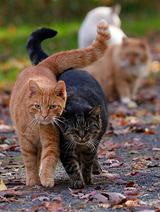

Cats in Ancient Egypt
Cats were highly revered in Ancient Egypt, often associated with the goddess Bastet, a symbol of protection, fertility, and motherhood. Killing a cat, even accidentally, was punishable by death.

Medieval and Renaissance Symbolism
During the Middle Ages, cats were often linked to witchcraft and superstition. Many believed black cats were witches’ familiars, leading to their persecution. However, during the Renaissance, their role shifted as people recognized their value in controlling pests.
Modern-Day Cats
Today, cats are one of the most beloved pets worldwide. They symbolize independence, mystery, and comfort. From internet memes to therapy animals, cats have become an essential part of modern culture.
